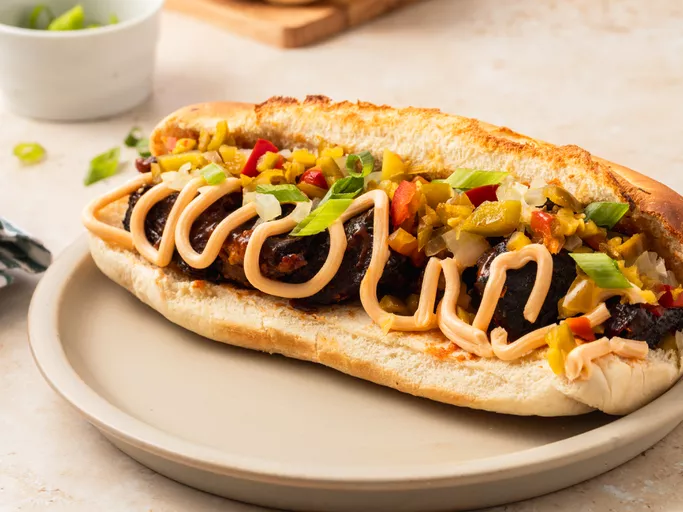

Burnt Ends Kansas City Style

Burnt End Recipe
Kansas City style burnt ends are a barbecue delicacy that originated in the heartland of America, known for its rich barbecue tradition.
These delectable bites are a testament to the city's passion for slow-cooked, flavorful meats. Born from the desire to make the most out of beef brisket trimmings,
Kansas City style burnt ends have evolved into a culinary sensation, cherished by barbecue enthusiasts across the nation.
The magic begins with the selection of quality beef brisket, a staple in Kansas City barbecue. The brisket is meticulously seasoned with a blend of spices that reflects the region's
commitment to robust and savory flavors. What sets Kansas City style burnt ends apart is the dual cooking process – first, a slow smoke to infuse the meat with the essence of hardwood,
and then a caramelizing finish to achieve that perfect combination of tenderness and crispy exterior. This distinctive preparation method results in bite-sized, flavor-packed pieces that are a celebration of texture and taste.
As you embark on the journey to create Kansas City style burnt ends, prepare to indulge in a culinary experience that captures the essence of barbecue culture. Whether you're a seasoned pitmaster or a novice at the grill,
this recipe promises to deliver a symphony of flavors that pays homage to the barbecue heritage of Kansas City – a city where burnt ends are not just a dish but a revered tradition.
What you need for a great Rustic Pizza dough
- 3 ½ pounds beef chuck roast (should be very well-marbled)
- 3 tablespoons barbecue dry rub
- ½ cup Kansas City style BBQ sauce
- 4 sandwich or hoagie rolls
- 1 (8 ounce) container cheese whiz, or sliced cheese as needed
- ⅔ cup sautéed onions
- ⅔ cup chopped jarred pickled peppers
- 2 tablespoons sliced green onions
How to make a delicious Kensas City Style Burnt End
- Gather all ingredients, and preheat the oven to 325 degrees F (165 degrees C). Season beef with dry rub, and double wrap in foil. Place on a sheet pan or in a baking dish, seam side up, and roast in the preheated oven for 2 1/2 hours.
- Let rest for 1 hour. Unwrap and transfer to a cutting board. Reserve all juices. Cut into 1-inch cubes and transfer to a mixing bowl. Add cooking juices, more dry rub if desired, and bbq sauce. Mix well, wrap, and refrigerate overnight.
- Preheat the oven to 450 degrees F (230 degrees C). Transfer beef into a shallow baking dish and brush generously with bbq sauce.
- Roast in the preheated oven until meat starts to char around the edges, about 1 hour. Remove from oven and brush again with bbq sauce. Reduce oven temperature to 250 degrees F (120 degrees C).
- Roast until the "burnt ends" are as tender as you want, about 1 1/2 hours more.
- Transfer the "burnt ends" onto the rolls, and finish with cheese whiz, onions, peppers, and green onions.
- Serve and enjoy!